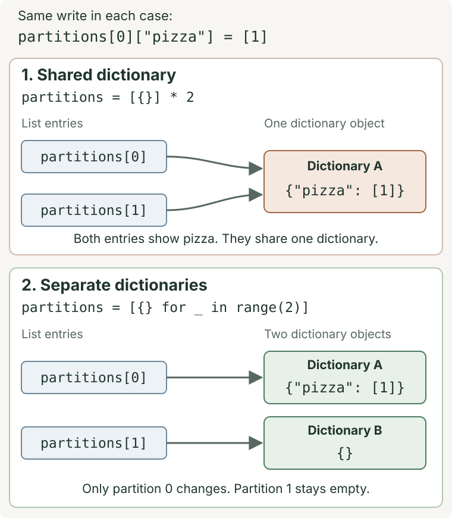

Ray · from a slow loop to distributed work
You have eight images and one function that inverts their colors. A loop processes one image at a time. How can independent images run together? Follow that question through Ray tasks, an actor that keeps a shared count, a larger cluster, and a dataset processed in blocks.
Follow one job through four problems
Keep the image transformation in view as each problem appears. Identify what changes: task scheduling, shared state, available workers, or data loading.
| Video chapter | Problem to predict | Ray tool to examine |
|---|---|---|
| 1:47 · Tasks | Eight images wait for one another in a loop. | Submit independent tasks and retrieve their results. |
| 7:44 · Actors | Workers need one shared count. | Send updates to an actor that owns the count. |
| 13:50 · Clusters | The workload grows to 10,000 images. | Distribute tasks across workers on multiple machines. |
| 19:56 · Ray Data | A 500 GB image collection exceeds a machine’s 16 GB memory. | Read, transform, and write data in blocks. |
These image sizes and workloads come from the video. The course’s arXiv corpus and measured nearest-neighbor timings are separate examples.
Terms with a dotted underline have definitions. Hover or tap a term to read its explanation.
Get the starter files
Complete six functions in ray_images.py. Submit that file by Tuesday Dec 1 at class start. Seven correctness checks determine the grade. All required work runs locally with generated images.
Use Python 3.11–3.13 with the pinned Ray version in requirements-ray.txt. The Ray installation guide lists supported platforms.
git pull
cd labs/lab-11/starter
python3 -m venv .venv
source .venv/bin/activate
python -m pip install -r requirements-ray.txtOn Windows, activate the environment with .venv\Scripts\activate. If python3 selects another version, use python3.13 to create the environment.
| File | Your action |
|---|---|
ray_images.py | Replace the six raise NotImplementedError statements. Keep the supplied function names and decorators. |
demo_ray.py | Run the supplied image, timing, counter, and dataset demonstration. |
test_ray_images.py | Run function checks, then the full seven-check suite. |
requirements-ray.txt | Install Ray Data, NumPy, and Pillow. |
Keep your code short, clear, and easy to edit. Use clear names and simple steps. Do not add code comments. Keep explanations in these instructions. The required exercise needs no downloaded corpus, cloud account, Java installation, or paid service.
Predict the slow loop
The video starts with eight small images. Each image has 10 rows, 10 columns, and three color channels: red, green, and blue. Each channel value is between 0 and 255. Subtracting it from 255 inverts that channel.
Input RGB value: [0, 64, 255]
Inverted value: [255, 191, 0]The starter supplies the image operation:
def process_image(image):
time.sleep(1)
return 255 - imageThe one-second sleep simulates a delay. It does not measure expensive CPU work. This demonstration makes overlapping calls visible. It does not establish the speedup of a real image filter.
A loop calls this function for eight images. When does the second call start? Does the second image need the first image’s result?
Check your explanation
The second call starts after the first returns. Each image transformation is independent. Without overhead, eight one-second waits take eight seconds sequentially.
Use predict, run, explain. Predict what can run independently and what must wait. Run the function check. Explain what the returned value represents.
1 · Run independent tasks
Video: tasks, from 1:47. The same image function can run as a remote task. The supplied @ray.remote decorator marks its wrapper for Ray.
| Operation | What the caller receives | What waits? |
|---|---|---|
process_image(image) | The processed image | The caller waits for the function. |
process_image_task.remote(image) | An ObjectRef for the result | The caller can submit another task. |
ray.get(result_refs) | The processed images | The caller waits for the requested results. |
The video compares an object reference to a coffee receipt. The receipt identifies the order you will collect. Similarly, an ObjectRef identifies a result that may still be running. A reference is not the image itself.
Implement two functions
- In
process_image_task(image), return the result of the suppliedprocess_image(image). - In
process_parallel(images), submit one remote task per image, in input order. - Gather the full reference list with one
ray.get()call after submitting all tasks. - Return the gathered image list in input order. Keep the input list and arrays unchanged.
An empty image list must return an empty result list. Calling ray.get() on an empty reference list is valid.
This loop waits after every submission. Why does that prevent the next image from starting sooner?
results = [ray.get(process_image_task.remote(image)) for image in images]Check your explanation
The loop cannot submit its next task until the current result arrives. Submit all independent tasks first. Available resources determine how many can run together.
python test_ray_images.py --unit process_image_task
python test_ray_images.py --unit process_parallel2 · Keep one pixel count
Video: actors, from 7:44. The next request is one shared count. Changing a worker’s global variable does not update the driver’s variable. Worker processes have separate memory and can be reused for later tasks.
Worker A changes its own variable.
Worker B changes its own variable.
The driver has not received either update.An actor is a running class instance that owns state. Create one counter actor. Pass its handle to every task that must update that count.
Count pixels, not channel values
| Quantity | One 10 × 10 RGB image | Eight images |
|---|---|---|
| Pixels: height × width | 100 | 800 |
| Channel values: height × width × channels | 300 | 2,400 |
The video uses image.size, which counts channel values. This lab counts pixels with image.shape[0] * image.shape[1]. The expected actor total is 800 pixels.
Implement three functions
- In
PixelCounter.add(count), addcounttoself.total. - In
PixelCounter.get_total(), returnself.total. - In
process_and_count(image, counter), process the image withprocess_image(image). - Send its pixel count to
counter.add.remote(...). - Wait for that update with
ray.get()before returning the processed image.
A submitted counter update may still be waiting. Finishing the image task does not automatically finish an actor call that task submitted. Waiting for the update makes completion explicit. Calls from different submitters have no guaranteed relative order.
Image processed → counter update submitted → update completed → task returns
All image tasks return → driver reads the actor's totalThe supplied driver creates one actor and passes the same handle to each image task:
counter = PixelCounter.remote()
refs = [process_and_count.remote(image, counter) for image in images]
results = ray.get(refs)
total = ray.get(counter.get_total.remote())This lab makes one update per input image. Retrying an update is separate work and can count an image twice. Automatic deduplication is not part of this exercise.
python test_ray_images.py --unit PixelCounter.add
python test_ray_images.py --unit PixelCounter.get_total
python test_ray_images.py --unit process_and_count3 · Add worker machines
Video: clusters, from 13:50. The workload grows from eight images to 10,000. The image function still handles one image. Worker machines add capacity for more concurrent tasks.
The head node supplies cluster management services. Worker nodes run tasks and actors. The application still submits tasks, passes actor handles, and retrieves references. A real cluster also needs compatible packages and access to its input data.
Illustrative model: 10,000 independent jobs, one second each, no overhead
8 available task slots: 10,000 / 8 = 1,250 seconds
80 available task slots: 10,000 / 80 = 125 secondsThese are idealized calculations, not measured runtimes. Startup, scheduling, data transfer, and shared resources change actual results.
| Video command | Purpose |
|---|---|
ray up my-cluster.yaml | Create the configured cluster. |
ray submit my-cluster.yaml counter_works.py | Submit the video’s script. |
ray down my-cluster.yaml | Remove the cluster after use. |
Reading only: cloud deployment is not required or graded. The lab starts Ray locally. Creating cloud machines can incur charges.
Does adding worker machines increase the memory available to one Python list in the driver?
Check your explanation
No. That list still belongs to one process. The next step must change how input is read and processed.
4 · Process data in blocks
Video: Ray Data, from 19:56. The video’s final example has 500 GB of images and 16 GB of memory. A list containing every decoded image cannot fit on that machine.
Image files → read blocks → transform rows → write output blocksRay Data represents the pipeline as work over blocks. Its transformation accepts a row dictionary containing an image. Ray Data schedules the transformation. The function passed to Dataset.map must be a plain Python callable.
Implement one function
- In
process_row(row), processrow["image"]with the suppliedprocess_image. - Return a new dictionary containing the processed image and every other original field.
- Keep the original row and its image unchanged.
- Leave
process_rowundecorated. Do not add@ray.remote.
python test_ray_images.py --unit process_rowThe supplied demo creates eight small rows in memory. That fixture checks your row function without requiring image downloads:
rows = [{"id": i, "image": image} for i, image in enumerate(images)]
dataset = ray.data.from_items(rows)
processed = dataset.map(process_row)
results = processed.take_all()Keep the id field so results can be matched to their inputs. Dataset output order is not the correctness test. Compare images by ID.
For the video’s larger collection, the input and output would stay in storage. This is a reading example with placeholder paths:
dataset = ray.data.read_images("s3://YOUR-BUCKET/raw-images")
processed = dataset.map(process_row)
processed.write_parquet("s3://YOUR-BUCKET/processed-images")The read and map operations build a plan. Consuming or writing results triggers execution. Metadata checks can also read data. Do not collect a large dataset into the driver with take_all(). The lab uses it only for eight small images.
Check your functions
Test one function at a time
python test_ray_images.py --list
python test_ray_images.py --unit process_parallel
python test_ray_images.py --unitThe six unit checks use small arrays and local Ray stand-ins. They supply unfinished helper functions while testing your selected function. Unit results are practice feedback. They do not start Ray workers.
Run the full suite after completing all six functions:
python test_ray_images.pyThe full suite checks six function contracts and one complete pipeline with real Ray tasks, an actor, and Ray Data. Missing required dependencies cause failure. A fresh starter fails because its functions are unfinished.
| Check | Required behavior |
|---|---|
| Task | Return the supplied image function’s result. |
| Parallel calls | Submit all images before one ray.get() call on the reference list. Preserve input order. |
| Counter update | Add each supplied count. |
| Counter read | Return the stored total. |
| Counted task | Count pixels and finish the actor update before returning. |
| Dataset row | Transform the image while preserving metadata and input. |
| Complete pipeline | Actual Ray execution produces the correct images and count. |
Run the supplied demo
python demo_ray.pyCheck that all image results agree and the counter reports 800 pixels. Read the serial and parallel timings afterward. The video reports 8.02 seconds and 1.05 seconds for its demonstration. Those are source timings, not required results for your machine.
The one-second sleep illustrates overlapping waits. It does not establish CPU scaling. No runtime or speedup threshold affects the grade.
Explain the result
What does a remote call return before an image is ready? Where does the shared count live? Why must each counted task wait for its actor update? Why does Ray Data need an ordinary function?
Check your explanation
A remote call returns an object reference. The actor owns the count. Waiting makes each task’s completion include its counter update. Ray Data schedules the ordinary row function itself. Tasks, actors, clusters, and data blocks solve different parts of the same image-processing problem.
Submit ray_images.py
Submit only ray_images.py to Gradescope by Tuesday Dec 1 at class start. The seven checks in test_ray_images.py determine 100% of the grade. Each check has equal weight.
Keep the supplied image function, function names, and decorators. Complete the six unfinished functions. No report, screenshot, timing target, cloud deployment, MapReduce file, or Spark file is required.
The lab meets Thursday November 19, 2026. There is no class on November 24. The December 1 deadline is unchanged.
Optional earlier exercises
The earlier MapReduce, Spark, and nearest-neighbor exercises remain below for practice. They do not contribute to the Ray image-processing grade. Their arXiv corpus and measured timings are separate from the video’s image examples.
Open the earlier exercises and worked examples
Trace how keys select a partition
This widget shows the grouping rule you will implement: four documents produce word-count pairs, and each key determines a partition. The colors show the destination selected by the widget’s simple hash.
Step through the phases and hover over a pair to inspect its destination. The optional exercise implements the same grouping pattern in Python over 4,000 abstracts. The lab uses Python’s hash(), so its partition numbers can differ from this illustration.
Open a terminal in the top-level AdvanceDatabase folder you cloned in Lab 1. Pull the latest files. Then open this lab’s starter folder:
git pull cd labs/lab-11/starter
The git pull command above updates the entire starter/ directory, including data/. If you download files individually, include data/. The Python links do not include the corpus and vector files.
Trace map output into independent partition dictionaries
Predict how many pairs mapping will emit. Watch both occurrences of pizza become separate pairs and arrive in the same group. Each partition has a dictionary, and each word in that dictionary has its own list of counts.
Follow two lunch orders: “Pizza, pizza!” and “Salad pizza.”. Each word requests one meal. These toy records show the counting rule before you apply it to the corpus. The displayed bucket numbers are a fixed teaching choice. The optional implementation uses Python’s hash(key) % n_partitions within one process.
Worked result: The map emits four pairs. Shuffle groups three values under pizza and one under salad. Reduction gives {"pizza": 3, "salad": 1}, independent of bucket numbering.
Enable JavaScript to step through the code and intermediate state.
Python detail: give each partition its own dictionary
Each partition needs a separate dictionary to store its key groups. In Python, {} creates an empty dictionary. The list partitions holds the dictionaries, with positions numbered from zero.
Suppose we want two partitions. This code writes one pizza value into partition 0. Predict what partition 1 will contain.
partitions = [{}] * 2
partitions[0]["pizza"] = [1]
print(partitions)
# [{'pizza': [1]}, {'pizza': [1]}]Why does pizza appear in both? The expression [{}] * 2 creates one dictionary and two list entries that point to it. Both entries show the same dictionary, so a change through either entry appears through both. Python does not copy the dictionary.
This breaks the partition rule: pizza was assigned to partition 0, but partition 1 now shows pizza too. The same problem occurs with [{}] * n whenever n is greater than one.
Create a new dictionary for each partition:
n = 2
partitions = [{} for _ in range(n)]
partitions[0]["pizza"] = [1]
print(partitions)
# [{'pizza': [1]}, {}]The expression [{} for _ in range(n)] runs {} once per partition, creating a new dictionary each time. The variable _ holds a loop number that we do not use. Now partition 0 contains pizza, and partition 1 remains empty.

partitions[0]["pizza"] = [1]. Follow partition 1’s arrow: does it reach the changed dictionary or a separate empty dictionary?Check yourself: with separate dictionaries, what changes when you add salad to partition 1?
After partitions[1]["salad"] = [1], partition 1 contains salad. Partition 0 still contains only pizza. Each partition keeps its own key groups.
Implementation checkpoints: create each partition dictionary separately. Preserve all duplicate occurrences in map_words and shuffle. Test with more than one partition. One bucket hides routing errors. The MapReduce runner executes sequentially. Spark and Ray add actual scheduling.
Optional practice files
| File | Ships as | What's inside |
|---|---|---|
mapreduce.py | optional practice | run_mapreduce runner provided. map_words, partition_for, shuffle, reduce_counts are YOUR JOB |
spark_wordcount.py | you edit, run locally | session setup + DAG printing provided. The three-transformation chain is YOUR JOB |
ray_speedup.py | you edit, run locally | brute-force neighbors(), the vectors, and the timing harness provided. Complete knn_remote and knn_all_parallel |
corpus.py | provided, read-only | 4,000 arXiv abstracts, shared with Labs 9 and 10. Download the data/ folder too |
embeddings.py | provided, read-only | load() returns 4,000 unit vectors with 64 dimensions, in the same order as DOCS |
test_sparkray.py | provided | OFFLINE group always runs. SPARK/RAY groups auto-skip if not installed |
Keep your code short, clear, and easy to edit. Use clear names and simple steps. Do not add code comments. Replace each raise NotImplementedError with your implementation. The function instructions are below.
The supplied DOCS list contains (arxiv_id, title, abstract) tuples from data/arxiv_4000.jsonl.gz in a fixed order. The corpus contains 800 papers from each category: cs.DB, cs.IR, cs.LG, stat.ML, and cs.DC. It contains about 700,000 words. The file data/arxiv_4000.f16 stores the matching MiniLM embeddings from Lab 9.
Install the optional engines with pip install pyspark ray. Spark runs on the JVM and needs a JDK supported by the installed PySpark version. Check it with java -version. Both examples run in local mode on your machine. MapReduce requires neither package, so you can begin it while preparing the optional dependencies.
Optional coding · MapReduce ungraded practice
For each function, follow the small example from words to pairs, grouped value lists, and totals. Check that repeated occurrences survive until their values are added, then run the function check. Converting occurrences to a set would discard duplicates and undercount repeated words.
Check these optional functions with python test_sparkray.py --unit NAME. This older harness provides practice feedback only.
- Read run_mapreduce (5 min): identify where it maps records, calls the shuffle, and reduces each grouped key. In a distributed implementation, the shuffle transfers records to the workers responsible for their keys.
map_words: tokenize withre.findall(r"[a-z]+", text.lower()), exactly like Lab 10. Return a list with one(word, 1)pair per occurrence, in input order. Keep repeated words as separate pairs.- partition_for: return
hash(key) % n_partitions. Within a run, equal keys must always select the same partition. - shuffle: create one dictionary per partition. Route each pair using
partition_for, then append its value to that partition’s list for the key. Return a list of exactlyn_partitionsdictionaries, including empty ones. Preserve the input pairs and the order of each key’s values. reduce_counts: return(word, sum(values)). For example,('pizza', [1,1,1])becomes('pizza', 3).
Run python3 mapreduce.py:
$ python3 mapreduce.py
31210 the
26815 and
21780 a
15090 of
14747 to
...Common words often dominate an unfiltered word count. Removing stop words changes which words are counted. A combiner preserves the counts while reducing intermediate pairs. The practice map function emits one raw pair per occurrence without either optimization.
Optional coding · Spark ungraded practice
Use the same word-count model to read the Spark chain: create occurrences, attach counts, group equal keys, add values. Predict where redistribution is required before looking for ShuffledRDD in the printed plan.
The starter provides the session and DAG printing. Write flatMap to emit word strings, map to turn each word into (word, 1), and reduceByKey to sum counts. The MapReduce function map_words already emits pairs, so do not pass its output through a second word-to-pair mapping.
The lines argument to word_counts(sc, lines) is an RDD of text strings. Tokenize each string with re.findall(r"[a-z]+", text.lower()). Return an RDD of (word, count) pairs. Do not call collect() inside this function. Transformations build the plan. The later collect() call runs it.
$ python3 spark_wordcount.py
=== the DAG (read bottom-up; the stage break is the shuffle) ===
(4) PythonRDD[5] at RDD at PythonRDD.scala:59 []
| MapPartitionsRDD[4] at mapPartitions at PythonRDD.scala:197 []
| ShuffledRDD[3] at partitionBy at NativeMethodAccessorImpl.java:0 []
+-(4) PairwiseRDD[2] at reduceByKey at spark_wordcount.py:37 []
| PythonRDD[1] at reduceByKey at spark_wordcount.py:37 []
| ParallelCollectionRDD[0] at readRDDFromFile at PythonRDD.scala:326 []Read the printed plan from its input upward. The map-side work includes flatMap and map. ShuffledRDD marks redistribution before the reduce-side work. The (4) labels indicate four partitions. Compare the final top-15 list with MapReduce’s result. The optional Spark test checks the complete result dictionary.
Optional coding · Ray neighbor searches ungraded practice
Transfer the image example to the corpus. Each document’s neighbor search is independent, just as each image transformation was independent. Submit all searches before retrieving results. Check the results against serial execution before comparing times.
For each abstract, find its ten nearest neighbors among the other 3,999 vectors. Each search is independent, so Ray can distribute the work across worker processes. This builds part of a k-nearest-neighbor graph. HNSW adds layers and neighbor-selection rules.
The supplied neighbors(doc) function ranks the other vectors by cosine similarity and returns their document positions. The vectors have unit length, so their dot products give cosine scores. Each search compares its vector with the other 3,999 vectors, each with 64 dimensions.
As a rough estimate, 25 ms per search would give 5 seconds for 200 searches. These estimates are separate from the measured reference run below.
- Complete
knn_remote(doc)inray_speedup.pyby returningneighbors(doc). The supplied@ray.remotedecorator makes this function a Ray task. - In
knn_all_parallel(docs), callknn_remote.remote(doc)for every document before waiting. - Pass all returned task references to one
ray.get()call. Return the results in the same order asdocs. Keepdocsunchanged.
The remote function uses the supplied VECTORS list. Ray makes these vectors available to workers for their searches. Calling ray.get() inside the launch loop would wait for each search before starting the next.
$ python3 ray_speedup.py
200 documents, 10 nearest neighbors each, brute force over 4,000 vectors
serial: 2.27 s
parallel: 0.66 s speedup: 3.5x
identical results: True
neighbors of [Fine-Grained Table Retrieval Through the Lens of Complex Que]:
Decomposition-Driven Multi-Table Retrieval and Reasoning for Numerical
Novel Table Search [Technical Report]
Toward Multi-Database Query Reasoning for Text2CypherThe reference Ray run was 3.5× faster on 10 cores and returned the same neighbors as the serial run.
The reference run was faster in parallel but did not scale in direct proportion to core count. Worker setup, scheduling, and data transfer add work, and some resources are shared. Increasing the number of searches may amortize some setup cost, while other overheads also grow. Measure the behavior on your machine rather than assuming a fixed speedup.
Measure how workload size and worker count affect speedup
Change the experiment. Set N_DOCS = 1000. Run the script again. Keep the value at 1000. Start Ray with ray.init(num_cpus=2, ...).
Report speedups for all three runs: 200 documents on all cores, 1000 documents on all cores, and 1000 documents on 2 cores. Explain which change affected the measured speedup more. Account for useful work and scheduling overhead.
Run python test_sparkray.py for the earlier exercises. Its OFFLINE, SPARK, and RAY groups are ungraded practice. Their results do not replace test_ray_images.py.